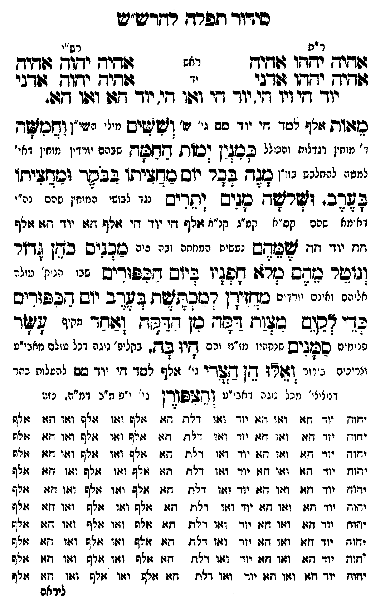

Neue Klartextfassung
=== טבלה === [ר"ת — ראש] אהיה יהוה אהיה [ר"ת — יד] אהיה יהוה אדני [רש"י — ראש] אהיה יהוה אהיה [רש"י — יד] אהיה יהוה אדני יוד הי ויו הי, יוד הי ואו הי, יוד הא ואו הא. === סוף טבלה === מאות [אלף למד הי יוד מם גי' ש'] וששים [מילוי כש"ו] וחמשה [ד' מוחין דגדלות והכולל] כמנין ימות החמה [שבהם יורדין מוחין דחו' למטה להשלים זו"ן] מנה בכל יום מחציתו בבקר ומחציתו בערב. ושלשה מנים יתרים [נגד לבושי המוחין שהם ג' אהיה — קס"א קמ"ג קנ"א — אלף הי יוד הי אלף הא יוד הא אלף הה יוד הה] שמהם [נעשית הכתונת וכפ' [?]] מכניס כהן גדול ונוטל מהם מלא חפניו ביום הכפורים [שאז הנוק' עולה לחיים וחוטם ויורדים] מחזירן למכתשת בערב יום הכפורים כדי לקים מצות דקה מן הדקה ואחד עשר [מקיף פנימיים] סמנים [אחוריו דז"א שהם בקליפי נוגה דכל עולם דאבי"ע] היו בה. ואלו הן הצרי [ג' אלף למד הי יוד מם להעלות כתר דעשיה מכל נוגה דאבי"ע] והצפורן [גי' י"פ מ"ב דמ"ה. כח.] === טבלה === יהוה יוד הא ואו הא ואו הא יוד ואו דלת הא אלף ואו אלף ואו הא אלף יהוה יוד הא ואו הא ואו הא יוד ואו דלת הא אלף ואו אלף ואו הא אלף יהוה יוד הא ואו הא ואו הא יוד ואו דלת הא אלף ואו אלף ואו הא אלף יהוה יוד הא ואו הא ואו הא יוד ואו דלת הא אלף ואו אלף ואו הא אלף יהוה יוד הא ואו הא ואו הא יוד ואו דלת הא אלף ואו אלף ואו הא אלף יהוה יוד הא ואו הא ואו הא יוד ואו דלת הא אלף ואו אלף ואו הא אלף יהוה יוד הא ואו הא ואו הא יוד ואו דלת הא אלף ואו אלף ואו הא אלף יהוה יוד הא ואו הא ואו הא יוד ואו דלת הא אלף ואו אלף ואו הא אלף יהוה יוד הא ואו הא ואו הא יוד ואו דלת הא אלף ואו אלף ואו הא אלף יהוה יוד הא ואו הא ואו הא יוד ואו דלת הא אלף ואו אלף ואו הא אלף === סוף טבלה ===
Original gegen neue OCR · Niqqud für Vergleich ausgeblendet
Original
=== טבלה === [ר"ת — ראש] אהיה יהוה אהיה [ר"ת — יד] אהיה יהוה אדני [רש"י — ראש] אהיה יהוה אהיה [רש"י — יד] אהיה יהוה אדניK155-001 יוד הי ויו הי, יוד הי ואו הי, יוד הא ואו הא. === סוף טבלה === מאות [אלף למד הי יוד מם גי' ש'] וששים [מילוי כש"ו] וחמשה [ד'K155-002 מוחין דגדלות והכולל] כמנין ימות החמה [שבהם יורדין מוחין דחו'K155-003 למטה להשלים זו"ן] מנה בכל יום מחציתו בבקר ומחציתו בערב. ושלשה מנים יתרים [נגד לבושי המוחיןK155-004 שהם ∅K155-005 ג' אהיה — קס"א קמ"ג קנ"א — אלף היK155-006 יוד הי אלף האK155-007 יוד הא אלף ההK155-008 יוד הה] שמהם [נעשית הכתונת וכפ' ] מכניס כהן גדול ונוטל מהם מלא חפניו ביום הכפורים [שאז הנוק' עולה לחיים וחוטם ויורדים] מחזירן למכתשת בערב יום הכפורים כדי לקים מצות דקה מן הדקה ואחד עשר [מקיף פנימיים] סמנים [אחוריו דז"א שהם בקליפי נוגה דכל עולם דאבי"ע] היו בה. ואלו הן הצרי [ג' אלף למד היK155-009 יוד מם להעלות כתר דעשיה מכל נוגה דאבי"ע] והצפורן [גי' י"פ מ"ב דמ"ה. כח.] === טבלה === יהוהK155-010 יוד הא ואו הא ואו האK155-011 יוד ואוK155-012 דלת הא אלף ואו אלף ואו הא אלף יהוהK155-013 יוד הא ואו הא ואו האK155-014 יוד ואוK155-015 דלת הא אלף ואו אלף ואו הא אלף יהוהK155-016 יוד הא ואו הא ואו האK155-017 יוד ואו דלת הא אלף ואו אלף ואו הא אלף יהוהK155-018 יוד הא ואו הא ואו האK155-019 יוד ואו דלת הא אלף ואו אלף ואו הא אלף יהוה יוד הא ואו הא ואו הא יוד ואו דלת הא אלף ואו אלף ואו הא אלף יהוה יוד הא ואו הא ואו הא יוד ואו דלת הא אלף ואו אלף ואו הא אלף יהוה יוד הא ואו הא ואו הא יוד ואו דלת הא אלף ואו אלף ואו הא אלף יהוה יוד הא ואו הא ואו הא יוד ואו דלת הא אלף ואו אלף ואו הא אלף יהוה יוד הא ואו הא ואו הא יוד ואו דלת הא אלף ואו אלף ואו הא אלף יהוה יוד הא ואו הא ואו הא יוד ואו דלת הא אלף ואו אלף ואו הא אלף === סוף טבלה ===K155-020
OCR · fehlbar
סידוד ותפרד רחזרע"ש ר "ת רש''י זלהיח יחדו תחיח ראש לשחיח יפ(חק ודיר ללללשש[של - זאך (חב. זד: יוך דזי ויו דזי. יוך חזי ודשו די. יוך דזן וזו ד(. כוגוזת וזצף ל0ד חיK155-001 יוד סב נ' 0 וזשקטים יילי רצין (חכזשח ד'K155-002 מוחין דגדלות והמלל ככגין וסזות דחאזז גבהם יוידין נוחין דאי'K155-003 למטה להחלבש 2זו-] מצד בבר וז ש כשזביתו בבפר וכזליתו דב. ושרזשד סגיש [חריש ינו ננישי זיייין פום ננ' דמאK155-004 שהם קס"א קמיג קנ"א זלף די יוד די גלש חז: יו- דז: וולף חוז יוד חד ז8ש(מש נעשית תמיזזנ יגף ניה כזבגיס כזףן גדזר (גושר ענם סר): דפליו ביוס גבפודים גני יניז' נינ: אל' הם ואנכי יורדים כ(חזידן רכזכתזשת ב8דב יוש דזכפוריש בדי דקנס נצ גז דשד כן גדבזש [צזגך יז' שד חניניח סס.ביש שנחריו מ"י: ורם דזיו בדץ. גקליפ' ניגה ונל טולם מאבי"ע - - 4 - זו לל ונרינם גיור וואז ד[ ן לדיK155-005 ג' ולף לסד דיK155-006 יוד סם להטלות נחר דניציצ ' נזכל גוג ה ([אגי"ט [זדגללורן ג י' י"פ נז"ב (ינמ"ה. נזה דוץ יז- חז: וצו וגוK155-007 יוד וזין די"ח וגזי זזלש וציו גול וזזו זז גלש יחוץ יזד -זזו יגון דז יוון וז:ן גלד. זזו זזלש וצוו זז וז:ו זזו זזלז יזוזK155-008 יוד ודגי וז:ו דז: יוך וז:ו ד"ת דו זולף וצוו זזלש וזזו זו זלף יזוז יזד חז וזוו וזגK155-009 יוד וצוו דלוז דזו זזאש וזו גלש וז:ו זז ז:לף יזוחK155-010 יוד זזו וז:ו 07:K155-011 יוד וזוK155-012 דלת חז: זולש יוזו זזלש וז(ו דזו זיף יזוחK155-013 יוד חז: וזזו זז:K155-014 יוד וזוו דלח חז: ולש ווזו ולש וז:ו חזו זייף יזוז יוד דו וגו זזו יוד יזזו דלח וחזו זזלפ וצו זזלף ווזו זז: ז[לש ידזווז יוד זזצז וזזו זז: יוד וצווK155-015 דלת גזזו זול וז( ז(לף וז:ו זנ גז"ש יזוחK155-016 יוד דזנ וגו וזוזK155-017 יוד וזו דלח גזגז גזלף וז:ו גזתש וצוו דז( :(צ9 יזוחK155-018 יוד גג: וז:ו חז:K155-019 יוד וז:ו דאת וז: זזלש וצו גזית ו:וו זז: וזל ליראםK155-020